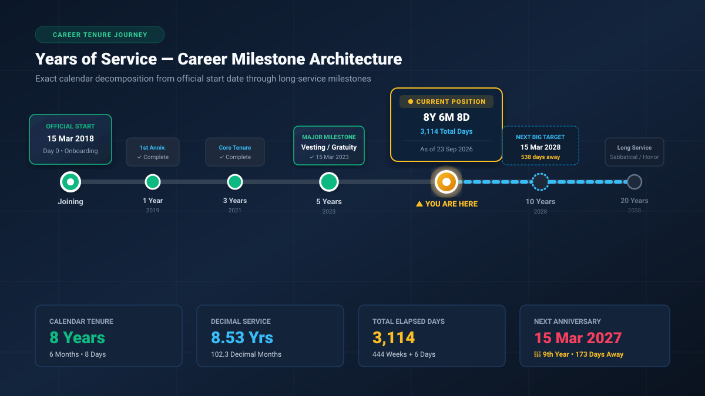
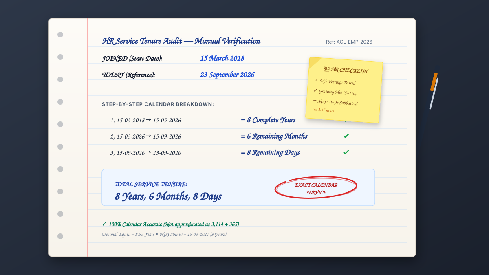
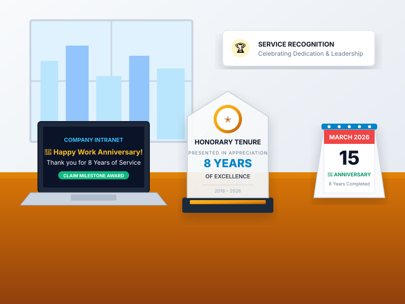
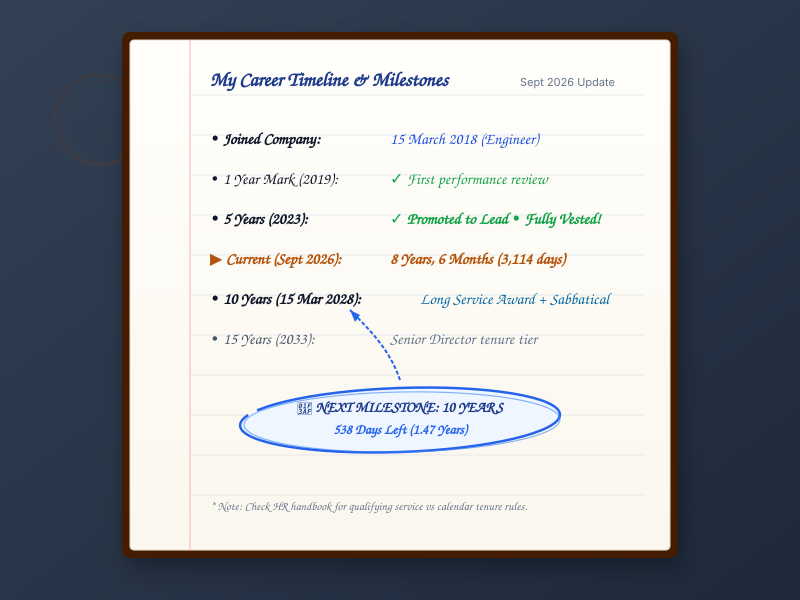

Years of Service Calculator — Calculate Employee Tenure & Length of Service
Calculate your exact employee tenure and length of service between your joining date and reference date. Decomposes elapsed service into precise calendar years, months, and days, while reporting total days, decimal service years, next work anniversary countdown, and milestone roadmaps.


Calculate Your Years of Service
🔒 Private & Local: All dates are calculated client-side in your web browser. No employment information or dates are ever transmitted to a server.
Your Service Milestone Roadmap
Key corporate and career milestones calculated from your official joining date.
| Milestone | Career Context | Exact Calendar Date | Status |
|---|
Table of Contents — Guide & Technical Directory
Jump directly to any section of our comprehensive employment tenure guide.
How to Calculate Years of Service
Calculating years of service accurately requires more than simply dividing the number of elapsed days by 365. Because Gregorian calendar years contain either 365 or 366 days, and calendar months range from 28 to 31 days, formal corporate tenure is measured through calendar-anniversary decomposition.

Official Start Date
Identify your recognized first day of work or appointment date recorded in your employment contract, HR system, or pension enrollment records.
Reference Cutoff Date
Determine the evaluation date. For ongoing employment, this is today's date. For former jobs or retirement planning, use the resignation, termination, or projected cutoff date.
Decompose Y / M / D
Measure completed full calendar years first. Then count remaining whole calendar months, and finally determine the remaining elapsed days up to the reference date.
The Exact Calendar Decomposition Formula
Given an official Start Date \((Y_1, M_1, D_1)\) and a Reference Date \((Y_2, M_2, D_2)\):
Step B (Months): Remaining Months = \((M_2 - M_1 - ( ext{if } D_2 < D_1 ext{ then } 1 ext{ else } 0) + 12) \pmod{12}\)
Step C (Days): Remaining Days = \(D_2 - D_1 + ( ext{if } D_2 < D_1 ext{ then DaysInPreviousMonth}(M_2, Y_2) ext{ else } 0)\)
This method guarantees that your work anniversary arrives on the exact calendar day each year, preventing the calendar drift inherent in decimal approximations.
How to Calculate Years of Service: Years, Months & Days
Detailed walkthrough of calendar-anniversary arithmetic, day borrowing, and Excel formulas.
What Is Years of Service? Meaning, Tenure & Length of Employment
Learn the difference between calendar tenure vs. qualifying service, milestones, and career experience.
Years of Service Calculation Example
To understand how the three steps work in practice, let us walk through an employee who joined on March 15, 2018 and whose service is evaluated on September 23, 2026.
Interval Decomposition Walkthrough
• Total Elapsed Days: 3,114 Days
• Decimal Years: 8.53 Years (\(3,114 \div 365.2425\))
• Weeks & Days: 444 Weeks + 6 Days

Calendar Service vs. Decimal Service Years
Depending on whether you are preparing a service recognition award or submitting payroll records, you may encounter two distinct ways of expressing employment tenure.
| Feature / Dimension | Calendar Tenure (Y / M / D) | Decimal Service Years |
|---|---|---|
| Primary Format | Years, Months, and Days (e.g., 8y 6m 8d) | Single floating-point decimal (e.g., 8.53 years) |
| Core Calculation | Gregorian calendar month and year cycles | \( ext{Total Elapsed Days} \div 365.2425\) |
| Primary Use Cases | Work anniversaries, award plaques, seniority lists, contracts | Actuarial valuations, payroll prorating, statistical analysis |
| Leap Year Handling | Absorbs Feb 29 without moving annual anniversary date | Adds 1 day to numerator, slightly shifting decimal value |
| Employee Communication | Natural, intuitive, and celebratory | Technical; requires explanation of fractional months |
Age Calculator Lab presents Calendar Years, Months, and Days as the primary result because employment anniversaries are legal calendar events, while simultaneously providing decimal service years for actuarial and planning utility.
How Does the Calculator Handle Leap Years and Month-End Dates?
Calendar calculations must handle irregular month lengths (28, 29, 30, and 31 days) and leap-year cycles with mathematical rigor.
The February 29 Leap-Day Join Date Dilemma
If an employee begins work on February 29 during a leap year (such as February 29, 2020), when does their 1st work anniversary occur in 2021?
Common in British statutory employment law and corporate HR: the anniversary is celebrated on the final day of February. Under this rule, the employee completes 11 months and 30 days on February 28.
Standard in astronomical date math and civilian administrative systems: a full year is completed once 365 full 24-hour days have elapsed, marking March 1 as the first day of the new service year.
Our calculator flags February 29 join dates and treats March 1 as the completion of the full anniversary year, while recognizing February 28 as 11 months and 30 days in common years.
Current Employee vs. Former Employee
Depending on your current employment status, your service tenure calculation answers different personal and professional questions:
Current Employment (Active Tenure)
Start Date → Today's Date (Dynamic)
Your service tenure continues to grow each day. Using this mode unlocks the Live Anniversary Countdown, tracks your dynamic progress toward upcoming long-service milestones (like 5 or 10 years), and calculates exact days until your next corporate recognition event.
Past Employment (Closed Tenure)
Start Date → Last Working Day (Fixed)
Your service tenure is static and finalized. This mode is designed for resume writing, LinkedIn profiles, background checks, severance verification, and confirming whether you satisfied statutory vesting requirements (such as 5 years for gratuity) before departure.
What If You Left and Rejoined? Breaks in Service & Rehire Rules
A common dilemma for professionals who take career breaks, sabbaticals, or return to a previous employer (boomerang employees) is how their tenure is aggregated.
Continuous Tenure vs. Bridged Service
A simple date subtraction only measures a single continuous span of time. If you worked from 2015 to 2019, took a two-year break, and rejoined from 2021 to 2026, you have two distinct service terms:
• Period 2: 15 Jan 2021 → 15 Jan 2026 = 5 Years, 0 Months
• Aggregated Service: 9 Years, 0 Months (excluding the 2-year gap)
Important Employer Caveat: Employers generally treat breaks in service in one of three ways:
- Service Reset (Most Common): Seniority, notice periods, and statutory benefits restart from Day 0 upon rehire.
- Service Bridging: If the break was under an allowed threshold (e.g., 6 months or 1 year), prior service may be "bridged" after completing a probationary period.
- Separate Vesting: Prior pension or retirement balances remain frozen under their original terms while a new vesting clock begins.
You can use the "Add another service period" feature in our calculator to sum multiple separate stints into a combined calendar tenure report.
This calculator measures elapsed calendar duration between two dates. It does not determine legal "qualifying service" for pensions, gratuity, statutory redundancy, leave accruals, union seniority, or retirement benefits.
Official qualifying service is strictly governed by statutory labor laws and internal employer policies:
- India: Under the Payment of Gratuity Act 1972, an employee must complete at least 240 working days in a year (190 days for underground mines) for that year to qualify toward the 5-year gratuity threshold.
- United States: Under ERISA, a "Year of Service" for pension and 401(k) vesting typically requires 1,000 hours of work within a 12-month computation period.
- United Kingdom: Statutory redundancy pay and unfair dismissal protections require continuous calendar weeks under the Employment Rights Act 1996, where certain strikes or unauthorized absences break continuity.
When Can You Use a Years of Service Calculator?
Accurate tenure tracking is valuable across multiple personal career checkpoints and organizational workflows:
Employee Tenure
Maintain exact career records for resumes, CVs, LinkedIn profiles, and personal professional achievement tracking.
Work Anniversary
Track the exact date and live countdown until your next annual milestone to plan celebrations or request performance reviews.
HR Review & Seniority
Audit employee tenure bands to verify eligibility for increased annual leave entitlements, notice period tiers, and internal promotions.
Service Recognition
Identify upcoming corporate long-service milestones to prepare honorary plaques, gift certificates, or sabbatical privileges.
Retirement Planning
Project calendar tenure up to a target retirement date or contract expiration to estimate potential benefits.
Employment History
Verify exact closed service durations between past start and end dates for employment background checks and security clearances.

Your Career Milestone Planner
Every career consists of meaningful checkpoints. Here is what each milestone represents in modern employment culture:
The standard initial assessment period where job fitness, team integration, and core competencies are evaluated before confirming permanent status.
Completing your first full year marks your inaugural work anniversary and initial compensation review. Three years establishes proven domain ownership.
A significant statutory benchmark globally. In India, it unlocks gratuity eligibility under the 1972 Act. In many US corporations, 401(k) company matches become 100% vested.
A decade or more of loyalty is honored through long-service awards, extended paid sabbaticals, pension tier enhancements, and lifetime honorary alumni status.

Years of Service FAQs
Detailed answers addressing exact calculations, anniversary dates, leap years, rehire rules, and legal qualifying service.
How do I calculate my years of service?
To calculate your years of service, find your official employment start date and subtract it from your reference date (today's date or your last working day). The calculation decomposes the interval into completed calendar years, remaining whole calendar months, and remaining days using exact Gregorian calendar arithmetic.
What is my length of service?
Your length of service (also known as employee tenure) is the total elapsed calendar duration you have worked for an employer from your official onboarding date to the present or separation date. It can be expressed in years, months, and days, or as a single decimal year number.
How do you calculate employee tenure?
Employee tenure is calculated by measuring the unbroken calendar interval between an employee's hire date and the date of evaluation. Unlike dividing total days by 365, exact calendar tenure preserves annual anniversary dates and accounts for leap years and varying month lengths.
How do I calculate years and months of service?
First, count all whole calendar years from your start date to the most recent anniversary date. Second, count the whole calendar months from that anniversary to the same day in the current month. Finally, count the remaining days up to the reference date.
How many years have I worked at my company?
Enter your official first day of work into our Years of Service Calculator above and leave the reference date set to "Today". The tool immediately computes your completed years, remaining months and days, total elapsed days, and decimal years.
How do I calculate service from a joining date?
Enter your official joining date as the start date. If you are currently employed, leave the reference date set to today. If you have already separated, enter your official last working day. The tool performs Gregorian calendar subtraction to deliver the exact elapsed duration.
What is the difference between tenure and years of service?
In general workplace terminology, "tenure" and "years of service" are often used interchangeably to describe elapsed employment duration. However, in formal HR and legal contexts, "tenure" refers to the unbroken calendar duration of employment, while "qualifying years of service" reflects continuous service hours credited toward pensions, severance, or vesting.
How are decimal years of service calculated?
Decimal years of service are calculated by dividing the total number of elapsed calendar days by 365.2425 (the average number of days in a Gregorian calendar year) or by calculating the fractional proportion of the current service year. For example, 8 years and 6 months is approximately 8.50 to 8.53 decimal years.
Does a leap year affect years of service?
In exact calendar-anniversary calculations, a leap year adds February 29 to the calendar year, which increases the total day count by 1 day. However, it does not alter whole-year anniversary dates (e.g., joining on March 15, 2019 completes exactly 1 year on March 15, 2020).
What happens if my employment started on February 29?
If employment began on leap day (February 29), in non-leap years there is no February 29. Most employers and legal conventions observe the work anniversary either on February 28 or March 1. This calculator completes the full year on March 1 of common years while recognizing February 28 as 11 months and 30 days.
Can I calculate service until a future date?
Yes. Switch the End Date option from "Today" to "Choose a date" and input any future date (such as a planned retirement date, project completion date, or upcoming milestone) to project your future years of service.
Can I calculate service for a previous job?
Yes. Select "Past Employment" mode at the top of the calculator, enter your original start date and your final last working day, and calculate your exact completed tenure for your resume, LinkedIn profile, or background check verification.
Does unpaid leave count toward years of service?
In a calendar calculation, all elapsed days are counted. However, for statutory and organizational qualifying service (such as pension vesting, gratuity eligibility, or paid leave accruals), periods of unauthorized absence or extended unpaid leave (Leave Without Pay) are frequently deducted under employer policy.
Does a break in employment affect service?
Yes. When an employee leaves and later rejoins an organization, the intervening gap is a break in service. Unless the employer has an explicit bridging policy, tenure for statutory benefits typically restarts from the rehire date. You can use our "Add another service period" tool to aggregate multiple distinct terms.
Is years of service the same as qualifying service?
No. Years of service calculated here represents elapsed calendar tenure. Legally qualifying service is a formal statutory determination defined by labor laws, pension scheme rules, collective bargaining agreements, and HR handbooks that deducts non-qualifying absences and requires specific working day minimums.
Navjeet Kamboj
Navjeet Kamboj is the founder and editor of Age Calculator Lab. He specializes in designing transparent, mathematically rigorous calculation tools for chronological age, professional tenure, and calendar milestone tracking.